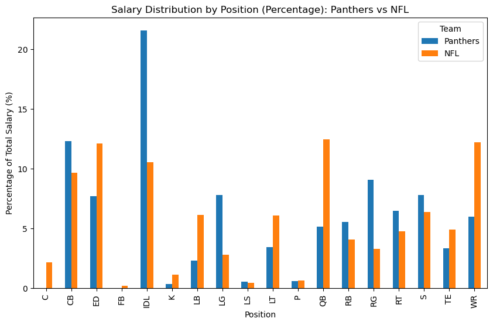
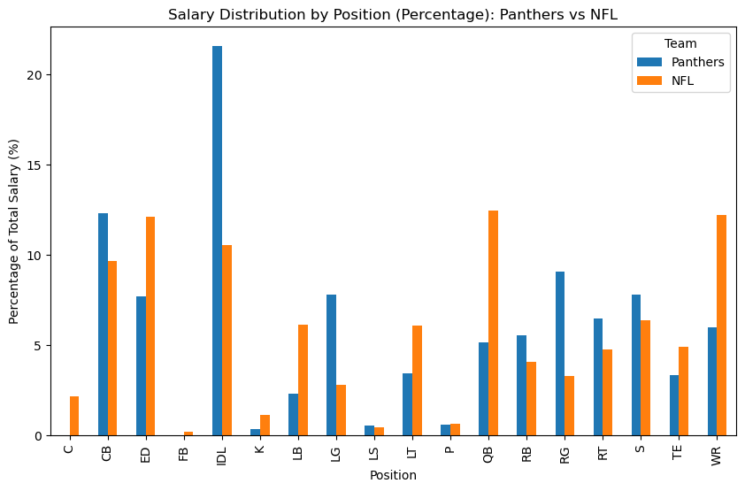

To prevent large-market, high-valued NFL teams from acquiring the best players by offering them the highest salaries, each team must operate under a strict salary cap. This is the maximum limit of money each NFL team can spend on its players, determined by the NFL every year in order to promote a competitive balance throughout the league. The problem this project addresses is understanding how the Carolina Panthers distribute their salary cap spending in comparison to the rest of the league.
Key questions include:
My data comes from OverTheCap, accessed through the nflreadr R package.
It contains contract details for every NFL player, both active and inactive.
There are 25 columns containing different attributes, but we primarily utilize player names, position, team, and APY (average per year salary).


We now have two separate databases, one for the NFL as a whole and the other for only the Panthers. These databases sum APY at each position. They both only contain active contracts.
To explore the data, I created:
 

Data shows $0 allocated to center. Reality: Starting center Austin Corbett is listed as RG, inflating guard spending.
Panthers’ IDL spending is nearly double the league average. Driven by Derrick Brown’s $24M APY contract (4th highest at his position) plus other contracts (Wharton, Brown III, Robinson) totaling another $29M.
LB spending is well below league average. The Panthers ranked last in run defense last season.
QB spending is significantly lower than the league average. Explained by Bryce Young’s rookie contract (cheap relative to veteran QBs).
Panthers spend far below league average at WR. Mirrors weak production at the position. While rookie 8th overall pick Tetairoa McMillan offers potential, the roster lacks a proven WR1.
This data clearly displays discrepancies in how the Panthers are allocating their money. It shows potential roster balancing issues, such as concentration on IDL and neglect of LB. It also highlights comparisons to league averages, suggesting what they may need to invest in more strategically.
However, salary allocation doesn’t always correlate to performance. A young star player may still be on a rookie contract, meaning he isn’t paid like a top player yet. Thus, the relationship between money and production must be interpreted cautiously.